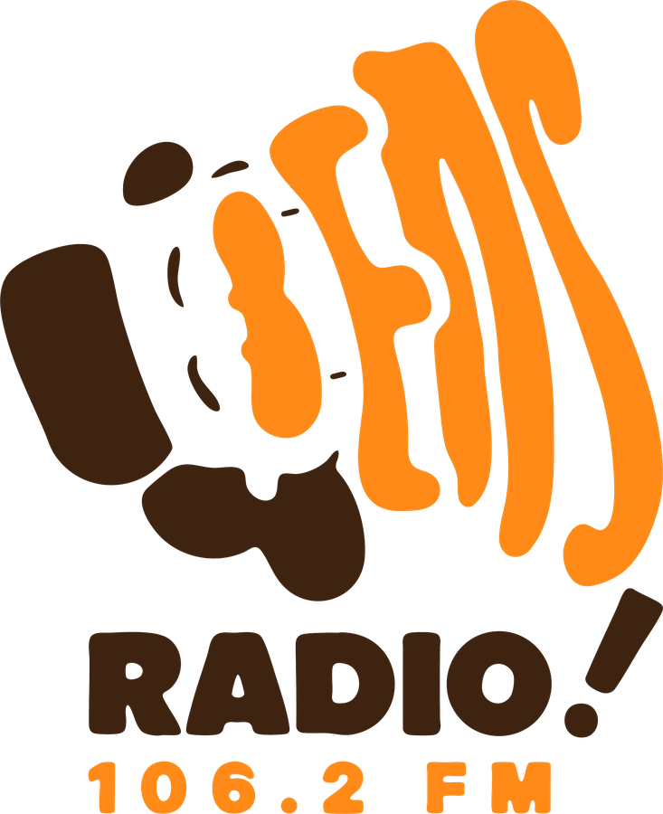
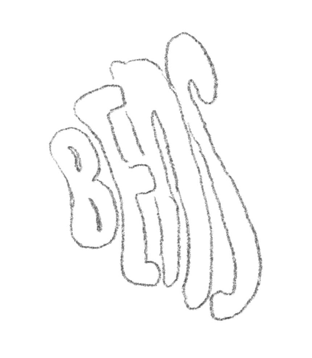
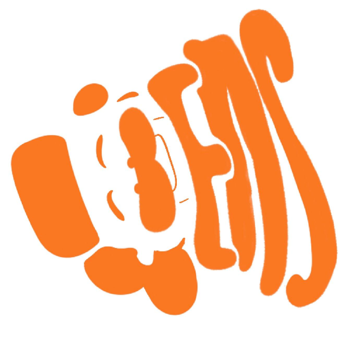
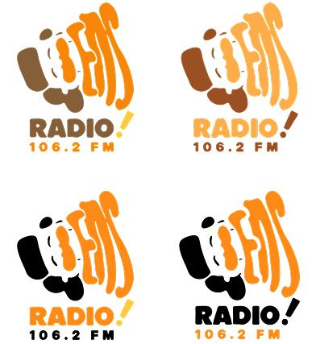
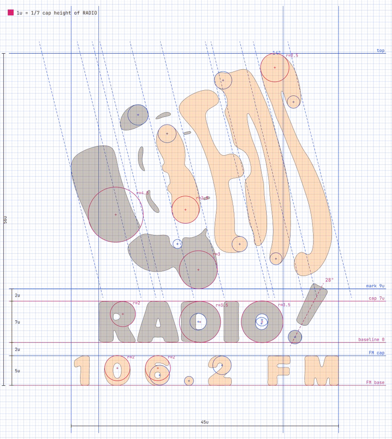

Bens Radio 106.2FM
“Betawi Punye Gaye, Selera Siape Aje.”

About the project
Bens Radio is a radio station built on Betawi culture,
founded by Benyamin Sueb on 5 March 1990. Today it broadcasts on
106.2 FM and has started competing with other stations in
the B–C class.
This rebranding carries Benyamin's spirit to listeners across
generations, through a logo, colour palette and brand voice that
feel playful and modern while keeping their Betawi roots.
Brand Identity Prism
Logo Design
Colour & Mood Direction
Research data
Market & audienceTarget audience · Jabodetabek
Lower bias, 18–25 = the new generation.
Upper bias, 35–50 = loyal listeners.
Positioning map
Parity vs. difference
Point of parity
- Music & entertainment
- On-air announcers
- Listener interaction
- Digital platforms
- Ads & partnerships
Point of difference
- Betawi identity
- Betawi language & humour
- Cultural preservation
- Benyamin's legacy
- Modern Betawi entertainment
Brand strategy
Positioning & big ideaPositioning statement
BENS RADIO is a Betawi culture-based radio station that brings entertainment, music, humour and everyday stories with a bold, outspoken and energetic character, carrying the spirit of Benyamin Sueb to listeners across generations without losing its cultural roots.
Reasons to believe: the roots of Benyamin Sueb's identity and a commitment to carry Betawi culture forward.
Big idea
Uniting Benyamin's legacy, BENS RADIO's personality, and its relevance for the future.
A space to joke, make music and tell stories, where Betawi character keeps on living.
Brand mantra
Jenaka (Fun)
Spontaneous, expressive, humorous.
Update
Modern, yet still BETAWI.
Ceplas-Ceplos
Characterful, bold, honest.
Brand identity prism
Six facetsPhysique
A moustache made from the letter B, Benyamin's playful face, in orange and brown.
Personality
Fun and outspoken, like Benyamin's smile in the logo.
Culture
Carries the soul of Benyamin Sueb as a Betawi man.
Relationship
A hangout buddy who makes you laugh, close through 106.2 FM.
Reflection
Relaxed, down-to-earth and loyal listeners.
Self-image
A cool Betawi radio station: “Betawi punye gaye!”
Visual development
Logo process


Colour palette
Betawi · Orange · JenakaFinal logo
Colour · B&W · Reverse · Grid
Reverse
Grid